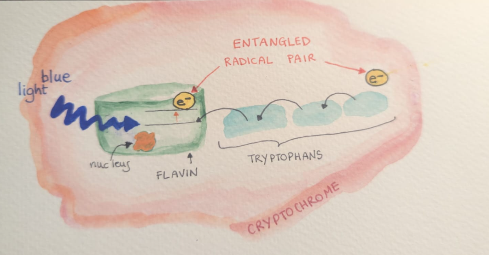
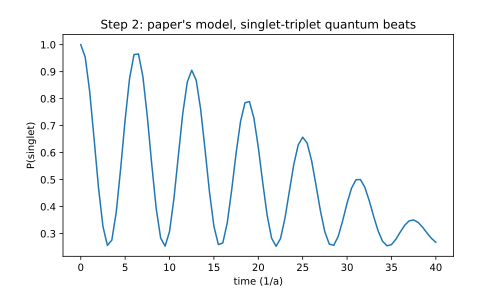
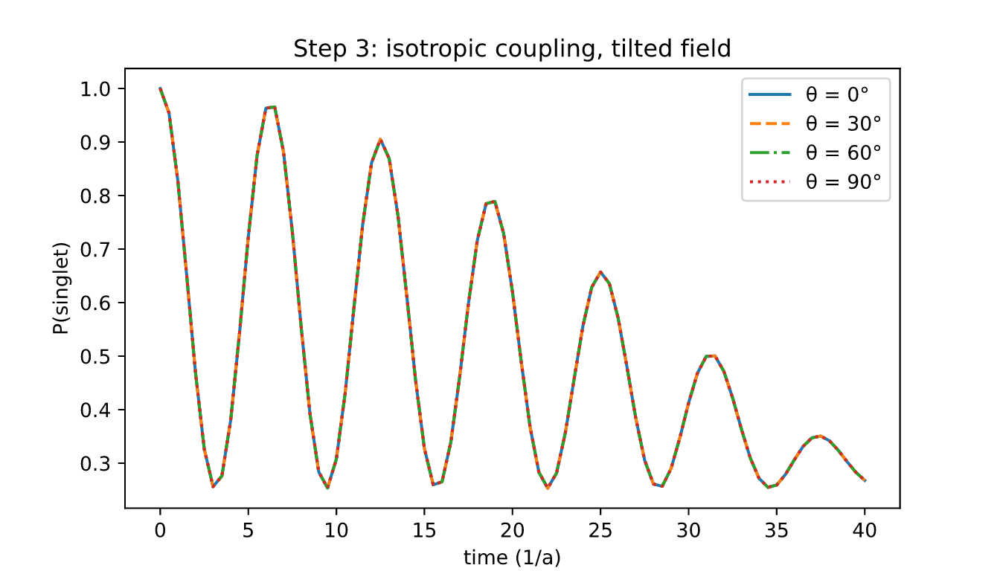
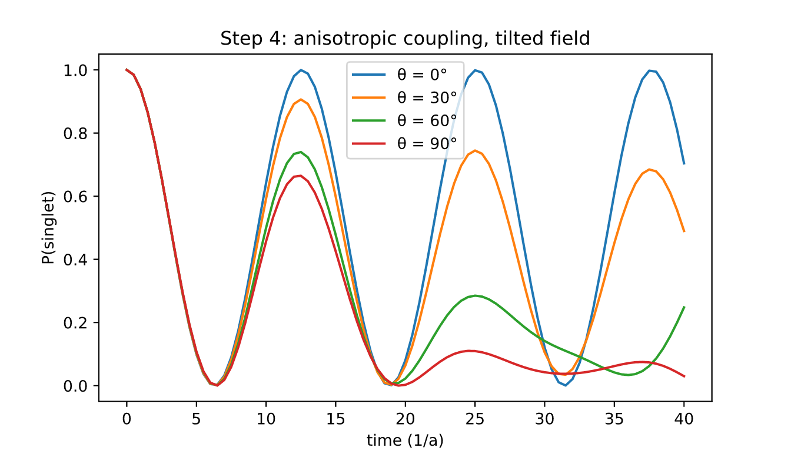
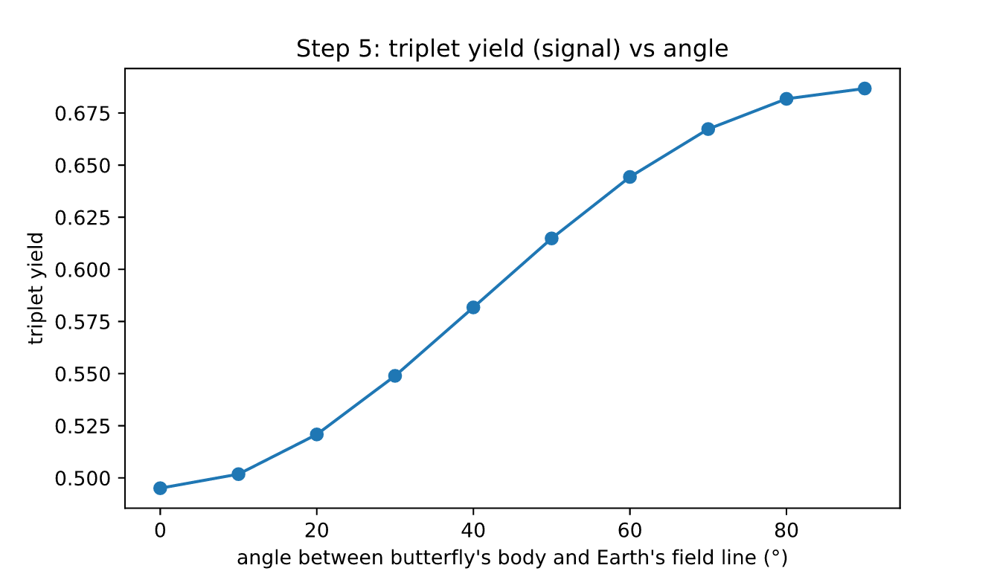

Abstract
1. Introduction
She is a symbol of summer, flowers and ephemeralness: meet the monarch butterfly!
Every year, monarch butterflies fly thousands of kilometres across North America. Starting from the mountain forests of Michoacán in central Mexico in early spring, over a few months and three to four generations, they make their way all the way up to southern Canada.
Then, at the end of summer, a super generation migrates all the way back to the same mountain forests in central Mexico. But how does the butterfly know in which direction she is supposed to fly?
In this project, we explore the quantum compass that is thought to help guide monarch butterflies on their incredible migratory journey. Special proteins called cryptochromes, found in the eyes and antennae of monarchs, are very sensitive to blue light. Absorbing blue light creates a pair of entangled electrons, called a radical pair. It is thought that the interaction of the radical pair (and its coupling to a nucleus) with the Earth's magnetic field influences how the butterfly orients herself, effectively creating a quantum compass.

2. The Radical Pair
Cryptochromes are the proteins that are sensitive to light, and they sit in the butterfly's eyes and antennae. When blue light hits the flavin molecule inside the cryptochrome, an electron gets excited and jumps up a level. This leaves the electron unpaired, and an empty seat in the orbital it used to occupy.
The next-door neighbours, a chain of amino acids called tryptophans, now want to fill that empty seat. A chain reaction takes place, with each electron filling its neighbour's empty slot. However, at the far end of the chain, we are also left with an unpaired electron.
These two unpaired electrons are what form the radical pair! They are entangled, and they start off in a singlet state, meaning that their spins point in opposite directions, but neither one has a definite direction on its own. Spin is a property of quantum particles like electrons: it makes them behave like tiny magnets that can point up or down. In the singlet, the pair is in a superposition of "up-down" and "down-up", and their total spin is zero.
And this is where the fun things happen. Both electrons feel the Earth's magnetic field, and the flavin electron also feels the magnetic pull of its nucleus. This unbalanced influence makes the two spins turn at different speeds, making the pair oscillate between the singlet and a triplet state.
The radical pair of electrons is unstable and only lives for about a microsecond. Since its state is constantly oscillating between a singlet and a triplet state, the final state is probabilistic.
- If it ends as a singlet, the extra electron on the flavin can jump back to the tryptophan and fill its empty seat, effectively undoing the chain reaction.
- If it ends as a triplet instead, it forms a chemical product, which is thought to affect how the butterfly perceives the world.

3. Problem Statement
In this project, I use the three-spin model of Aiello et al. (2026) as a toy model: two electrons and one nucleus. In the paper, the nucleus pulls on the flavin electron via isotropic coupling (same in all directions). In real flavins, the nucleus pulls much more strongly along one axis, perpendicular to the flavin ring (an anisotropic coupling).
And what changes when the coupling is anisotropic?
4. The Hamiltonian
We model the three spins with three qubits: qubit 0 is electron 1 (tryptophan), qubit 1 is electron 2 (flavin), qubit 2 is the nucleus. Spin operators are half Paulis, \(\hat S = \sigma/2\). The pair starts in the singlet, with the nucleus 50/50 up or down:
The paper's Hamiltonian (Aiello et al., eq 1) has a Zeeman term for the field and a hyperfine term between electron 2 and the nucleus, with an isotropic tensor \(\mathbf{A} = a\,\mathbb{1}\):
In this project the field is tilted by an angle \(\theta\) away from the flavin axis \(z\) (paper eq SI 2), and the coupling is axial, \(\mathbf{A} = \mathrm{diag}(0, 0, a)\):
We follow the singlet over time, averaging over the two nuclear states \(m\):
Each pair lives for a random time with decay rate \(k\). The triplet yield, the share of pairs that can signal, is:
| Parameter | Value | Meaning |
|---|---|---|
| \(a\) | 1 | hyperfine strength; time is in units of \(1/a\) |
| \(\omega/a\) | 0.1 | Larmor frequency of the field (toy value; Earth ≈ 0.03) |
| \(k\) | 0.05 | decay rate, pair lifetime \(20/a\) |
| \(\theta\) | 0° to 90° | angle between the flavin axis and the field |
5. Building the Circuit
Each spin becomes one qubit: \(|0\rangle\) is spin up and \(|1\rangle\) is spin down. The circuit then does four things:
- Create the radical pair. Four gates put the two electrons in the singlet, \((|01\rangle - |10\rangle)/\sqrt{2}\).
- Let time pass. The Hamiltonian (eq 3) becomes a block of gates that evolves the three spins for a time \(t\). This is where the Earth's field and the nucleus act.
- Undo the singlet. The same four gates in reverse turn the singlet back into \(|00\rangle\).
- Measure the electrons. Getting 00 means the pair was still a singlet. Repeating this many times gives \(P_S(t)\).
The Hamiltonian is written as a sum of Pauli strings with
SparsePauliOp and turned into gates with
PauliEvolutionGate. To read the singlet probability, the
singlet gates are undone: the singlet becomes \(|00\rangle\), so
\(P_S\) is the chance of measuring both electrons as 0.
6. Results and Analysis
6.1 Reproducing the paper: isotropic coupling
First, the paper's model as it is: isotropic coupling, field along \(z\). The plot shows the probability that the pair is still a singlet, \(P_S(t)\). It starts at 1, drops as the pair turns into a triplet, then comes back again and again. These oscillations are called singlet-triplet quantum beats.

The nucleus sets the rhythm of the beats. The Earth's field slowly pulls the triplet states out of step, so each return is a little lower than the one before. To check the simulation, I compared it with the paper's exact formula (eq 18):
6.2 Tilting the field: nothing changes
Next, I tilt the Earth's field by an angle \(\theta\) (0°, 30°, 60° and 90°), keeping the paper's isotropic coupling. The four curves lie exactly on top of each other.
This makes sense: with an isotropic coupling, nothing in the molecule points in a particular direction. The singlet has total spin zero, so it looks the same from every direction, and the nucleus starts randomly up or down. Turning the field is then the same as turning the whole molecule, and nothing changes.

6.3 Anisotropic Coupling
In real flavins, the electron couples to the nucleus much more strongly along one axis, perpendicular to the flavin ring. Keeping an anisotriopic coupling gives the molecule a direction it can compare with the field.
Now the curves split. When the field is along the axis (0°), the singlet comes back completely, at \(t = 4\pi\). As the field tilts away, part of it pushes sideways on the spins and opens new paths from the singlet to the triplets. The beats get messier, and less singlet comes back.

6.4 The signal at each angle
A real pair doesn't live forever: each one ends after a short random time, at rate \(k\). The triplet yield (eq 5) averages over all those endings and gives the share of pairs that end as a triplet, the ones that can signal.
I assume the flavin's coupling axis points along the butterfly's body, so \(\theta\) is the angle between her body and the Earth's field line.

So the signal depends on which way she is facing relative to the field line. Near 40°, a small turn gives the biggest change in signal, which is where the compass would be most sensitive.
7. Running on IonQ
Qollab allows one job per run, so six experiments are packed side by side into one 24-qubit circuit. Each experiment gets a helper qubit entangled with its nucleus (H, then CNOT), which leaves the nucleus 50/50 up or down. All measurements come after a barrier at the end, 1000 shots, measuring only the electrons.
On the ideal simulator every point lands on the exact line, so the circuits are correct. On Forte's noise model, gate errors pull the values down, more for longer circuits. The compass trend survives: P(singlet) still falls steadily as the angle grows.
8. Sources of Errors and Assumptions
This is a toy model, so it is important to be clear about what it can and cannot tell us.
Known: the simulation matches the paper's exact formula to three decimals, and real flavin couplings are known to be strongly anisotropic.
Assumed: one nucleus, no decoherence, no interaction between the electrons, and toy values for the field strength and pair lifetime. The flavin's coupling axis is assumed to point along the butterfly's body.
Unknown: how cryptochromes are oriented in the monarch's eyes and antennae, and whether monarchs use this mechanism at all. Realistic models predict a smaller direction effect, from a few percent to about 25%.
Noise: on IonQ Forte 1, gate errors lower the values, more for longer circuits, and 1000 shots add an error of about ±0.015. Three qubits are easy to simulate classically, so no quantum speed-up is claimed. Each extra nucleus doubles the problem size, which is where quantum hardware becomes useful.
9. Next Steps
- Earth-strength field (ω/a ≈ 0.03) and real flavin coupling values
- Decoherence and recombination, with different singlet and triplet rates
- Electron–electron coupling, which can reshape the direction effect
- Averaging over many cryptochrome orientations
- The real field strength and inclination along the route from Tecumseh to central Mexico
- Error mitigation on Forte, and a run on real IonQ hardware
10. Summary and Conclusions
- Direction needs anisotropy. With the paper's isotropic coupling, the field's direction changes nothing.
- The signal depends on the angle. With an axial coupling, the triplet yield rises from 0.50 at 0° to 0.69 at 90°.
- It survives hardware noise. On IonQ Forte 1's noise model, values drop but the compass trend holds.
References
- Aiello et al. (2026), A physicist-friendly primer on the Hamiltonian for quantum sensing in proteins, arXiv:2604.18608
- Peter Hore on Radical Pair, YouTube, youtube.com/watch?v=FytxLiHlah4
- Guerra, Gegear and Reppert (2014), A magnetic compass aids monarch butterfly migration, Nature Communications
- Levy et al. (2013), Updated structure of Drosophila cryptochrome, Nature (PDB 4GU5)
- Xu et al. (2021), Magnetic sensitivity of cryptochrome 4 from a migratory songbird, Nature
Paintings are my own. Thanks to my mentor Andrew Projansky for feedback on the anisotropic coupling.